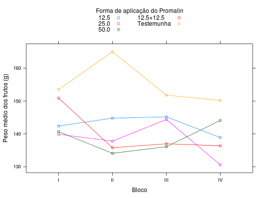

Resultados de um experimento instalado na Fazenda Chapadão, no município de Angatuba - SP. O delineamento experimental foi o de blocos casualizados, sendo as parcelas constituídas de 4 plantas espaçadas de 6 x 7 metros, com 12 anos de idade na época da instalação do experimento.
Um data.frame com 20 observações e 3 variáveis, em que
promalinblocopesoBANZATTO; KRONKA (2013), Quadro 4.5.2, pág. 84.
Mestriner, J. C. (1980). Estudos dos efeitos do promalin sobre frutos de macieiras (Malus ssp) cultivares Brasil e Rainha. Trabalho de Conclusão de Curso (Graduação em Agronomia) - Faculdade de Ciências Agrárias e Veterinárias, Universidade Estadual Paulista, Jaboticabal - SP.
library(lattice) data(BanzattoQd4.5.2)#> Warning: data set ‘BanzattoQd4.5.2’ not foundaddmargins(with(BanzattoQd4.5.2, tapply(X = peso, INDEX = list(promalin, bloco), FUN = sum)))#> I II III IV Sum #> 12.5 142.4 144.8 145.2 138.9 571.3 #> 25.0 139.9 137.8 144.4 130.6 552.7 #> 50.0 140.7 134.1 136.1 144.1 555.0 #> 12.5+12.5 150.9 135.8 137.0 136.4 560.1 #> Testemunha 153.5 165.0 151.8 150.2 620.5 #> Sum 727.4 717.5 714.5 700.2 2859.6xyplot(peso ~ bloco, data = BanzattoQd4.5.2, groups = promalin, type = "b", xlab = "Bloco", ylab = "Peso médio dos frutos (g)", auto.key = list(title = "Forma de aplicação do Promalin", cex.title = 1, columns = 2))